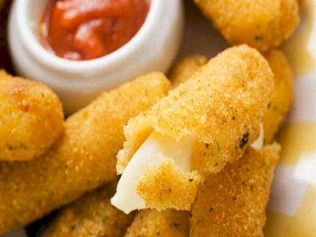

|  |
Food's name: Cottage cheesemai▸ Ingredients:
▸ Time to prepare: 3.5-4 hours ▸ Approx quantity: 25-30 cheese sticks |
▸ Detailed recipe:
Step 1: Sliced mozzarella cheese:
- Use a knife to cut the mozzarella cheese into sticks of medium thickness 1 to 2 cm. The ideal length of a cheese bar is the size of your little finger.
Step 2: Prepare the dough:
- Clean parsley leaves, remove dead leaves, wash with water. Then drain and grind. Pepper washed, drained and finely chopped. Next, you put 2 eggs in a bowl, then add
some ground pepper, beat this mixture until dissolved.
- Put tempura powder and flour in 2 different bowls. Next, you put the parsley in 2 bowls and mix well. Add a pinch of salt and pepper to the dough to enhance the flavor
of the dough.
Step 3: Roll the cheese into the dough:
- After preparing the dough, roll each cheese stick from the flour, egg mixture, and tempura powder one by one. Use your hands to roll the dough evenly and cover the
surface of the cheese. After rolling the dough for cheese, put all the rolled cheese in the freezer for about 45-60 minutes, then remove the cheese and repeat the above
steps. This takes a bit of time, but your finished product will be very crispy, delicious, and without melted cheese.
- After rolling out the dough for the second time, continue to put the rolled cheese in the freezer. It took about 1 and a half to 2 hours to take it out
Step 4: Fried cheese:
- Put the pan on the stove, put the oil in the pan, and heat until the oil is hot. Next, put the cheese in the pan, deep fry in oil for about 3-4 minutes until the cheese shell
is golden brown. Then remove the cheese to a plate lined with absorbent paper to drain the oil.
=> That's it, you've finished making delicious cheese sticks....
▸ Calories and related information: